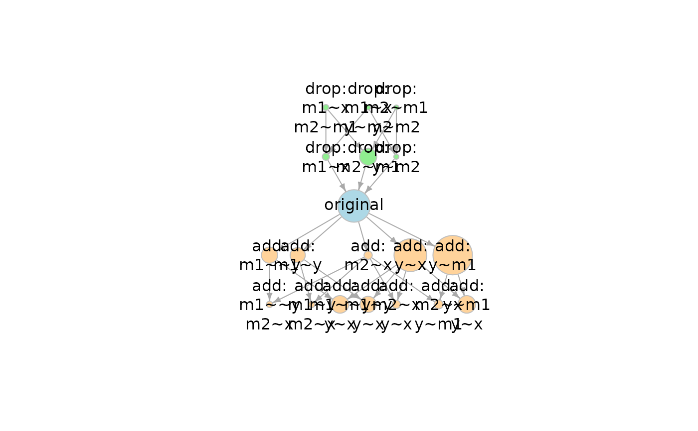
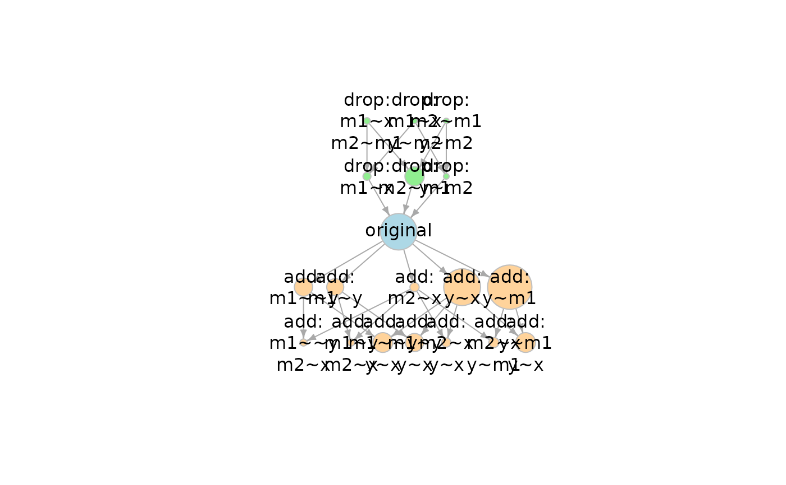

Generate an 'igraph' object from a 'model_set' object.
Usage
model_graph(
object,
node_size_by_x = TRUE,
x = NULL,
node_size = 5,
min_size = 5,
max_size = 35,
color_original = "lightblue",
color_add = "burlywood1",
color_drop = "lightgreen",
color_label = "black",
node_label_size = 1,
...
)Arguments
- object
Must be a
model_set-class object for now.- node_size_by_x
Logical. Whether node (vertex) sizes are determined by a variable. Default is
TRUE. Seexbelow on how size is determined.- x
If not
NULL, it should be a numeric vector of length equal to the number of models. The node sizes will be proportional to the values ofx, offset bymin_size. IfNULL, the default, the BIC posterior probabilities stored inobjectwill be retrieved.- node_size
If
node_size_by_xisFALSE, this is the size for all nodes.- min_size
The minimum size of a node. Default is 5.
- max_size
The maximum size of a node. Default is 35.
- color_original
The color of node of the original model. Default is
"lightblue".- color_add
The color of the nodes of models formed by adding one or more free parameters to the original model. Default is
"burlywood1".- color_drop
The color of the nodes of models formed by dropping one or more free parameters from the original model. Default is
"lightgreen".- color_label
The color of the text labels of the nodes. Default is
"black".- node_label_size
The size of the labels of the nodes. Default is 1.
- ...
Optional arguments. Not used for now.
Value
A model_graph-class object that
can be used as as an igraph-object,
with a plot method (plot.model_graph())
with settings
suitable for plotting a network
of models with BIC posterior probabilities
computed.
Details
It extracts the model list stored
in object, creates an adjacency
matrix, and then creates an igraph
object customized for visualizing
model relations.
Construction of the Graph
Each model is connected by an arrow, pointing from one model to another model that is formed by
a. adding one free parameter, or
b, releasing one equality constraint between two parameters.
That is, it points to a model with one less degree of freedom.
By default, the size of the node for each model is scaled by its BIC posterior probability, if available. See The Size of a Node below.
The original model, the models with more degrees of freedom, and the models with fewer degrees of freedom are colored differently.
The default layout is the Sugiyama layout, with simpler models (models with fewer degrees of freedom) on the top. The lower a model is in the network, the more the degrees of freedom it has. This layout is suitable for showing the nested relations of the models.
The output is an igraph object.
Users can customize it in any way
they want using functions from
the igraph package.
Examples
library(lavaan)
mod <-
"
m1 ~ x
m2 ~ m1
y ~ m2
"
fit <- sem(mod, dat_serial_4_weak, fixed.x = TRUE)
out <- model_set(fit)
out
#>
#> Call:
#> model_set(sem_out = fit)
#>
#> Number of model(s) fitted : 9
#> Number of model(s) converged : 9
#> Number of model(s) passed post.check: 9
#>
#> The models (sorted by BPP):
#> df Prior BIC BPP Cumulative
#> add: y~m1 1 0.111 463.892 0.267 0.267
#> add: y~x 1 0.111 464.320 0.216 0.483
#> original 0 0.111 464.340 0.213 0.696
#> drop: m2~m1 -1 0.111 465.973 0.094 0.790
#> add: m1~~y 1 0.111 466.131 0.087 0.878
#> add: m1~y 1 0.111 466.330 0.079 0.957
#> add: m2~x 1 0.111 468.595 0.025 0.982
#> drop: m1~x -1 0.111 469.423 0.017 0.999
#> drop: y~m2 -1 0.111 474.819 0.001 1.000
#>
#> Note:
#> - BIC: Bayesian Information Criterion.
#> - BPP: BIC posterior probability.
#> - Cumulative: Cumulative BIC posterior probability.
g <- model_graph(out)
plot(g)
 out2 <- model_set(fit, df_change_add = 2, df_change_drop = 2)
out2
#>
#> Call:
#> model_set(sem_out = fit, df_change_add = 2, df_change_drop = 2)
#>
#> Number of model(s) fitted : 19
#> Number of model(s) converged : 19
#> Number of model(s) passed post.check: 19
#>
#> The models (sorted by BPP):
#> df Prior BIC BPP Cumulative
#> add: y~m1 1 0.053 463.892 0.195 0.195
#> add: y~x 1 0.053 464.320 0.157 0.353
#> original 0 0.053 464.340 0.156 0.508
#> add: m1~~y;y~x 2 0.053 465.900 0.071 0.580
#> add: y~m1;y~x 2 0.053 465.900 0.071 0.651
#> drop: m2~m1 -1 0.053 465.973 0.069 0.720
#> add: m1~~y 1 0.053 466.131 0.064 0.784
#> add: m1~y;y~x 2 0.053 466.142 0.063 0.847
#> add: m1~y 1 0.053 466.330 0.058 0.905
#> add: m2~x;y~m1 2 0.053 468.147 0.023 0.928
#> add: m2~x;y~x 2 0.053 468.575 0.019 0.947
#> add: m2~x 1 0.053 468.595 0.019 0.966
#> drop: m1~x -1 0.053 469.423 0.012 0.978
#> add: m1~y;m2~x 2 0.053 470.325 0.008 0.986
#> add: m1~~y;m2~x 2 0.053 470.386 0.008 0.993
#> drop: m1~x;m2~m1 -2 0.053 471.056 0.005 0.999
#> drop: y~m2 -1 0.053 474.819 0.001 1.000
#> drop: m2~m1;y~m2 -2 0.053 476.451 0.000 1.000
#> drop: m1~x;y~m2 -2 0.053 479.902 0.000 1.000
#>
#> Note:
#> - BIC: Bayesian Information Criterion.
#> - BPP: BIC posterior probability.
#> - Cumulative: Cumulative BIC posterior probability.
g2 <- model_graph(out2)
plot(g2)

out2 <- model_set(fit, df_change_add = 2, df_change_drop = 2)
out2
#>
#> Call:
#> model_set(sem_out = fit, df_change_add = 2, df_change_drop = 2)
#>
#> Number of model(s) fitted : 19
#> Number of model(s) converged : 19
#> Number of model(s) passed post.check: 19
#>
#> The models (sorted by BPP):
#> df Prior BIC BPP Cumulative
#> add: y~m1 1 0.053 463.892 0.195 0.195
#> add: y~x 1 0.053 464.320 0.157 0.353
#> original 0 0.053 464.340 0.156 0.508
#> add: m1~~y;y~x 2 0.053 465.900 0.071 0.580
#> add: y~m1;y~x 2 0.053 465.900 0.071 0.651
#> drop: m2~m1 -1 0.053 465.973 0.069 0.720
#> add: m1~~y 1 0.053 466.131 0.064 0.784
#> add: m1~y;y~x 2 0.053 466.142 0.063 0.847
#> add: m1~y 1 0.053 466.330 0.058 0.905
#> add: m2~x;y~m1 2 0.053 468.147 0.023 0.928
#> add: m2~x;y~x 2 0.053 468.575 0.019 0.947
#> add: m2~x 1 0.053 468.595 0.019 0.966
#> drop: m1~x -1 0.053 469.423 0.012 0.978
#> add: m1~y;m2~x 2 0.053 470.325 0.008 0.986
#> add: m1~~y;m2~x 2 0.053 470.386 0.008 0.993
#> drop: m1~x;m2~m1 -2 0.053 471.056 0.005 0.999
#> drop: y~m2 -1 0.053 474.819 0.001 1.000
#> drop: m2~m1;y~m2 -2 0.053 476.451 0.000 1.000
#> drop: m1~x;y~m2 -2 0.053 479.902 0.000 1.000
#>
#> Note:
#> - BIC: Bayesian Information Criterion.
#> - BPP: BIC posterior probability.
#> - Cumulative: Cumulative BIC posterior probability.
g2 <- model_graph(out2)
plot(g2)
